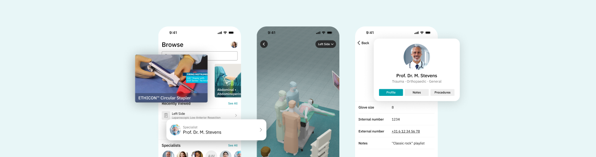
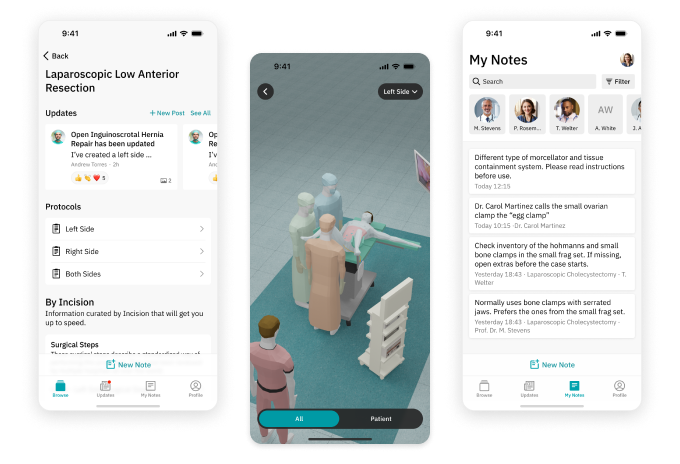
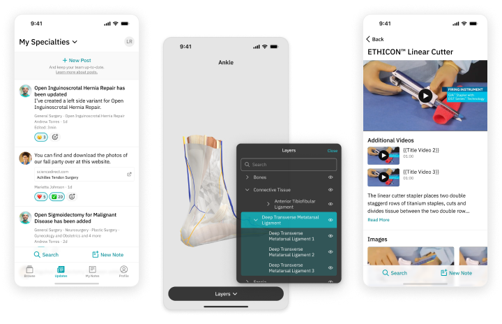
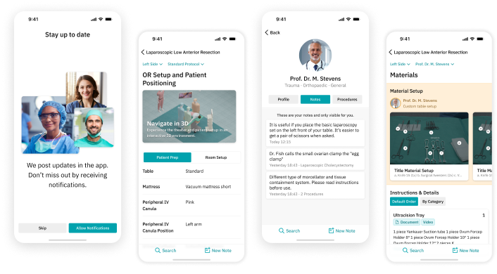
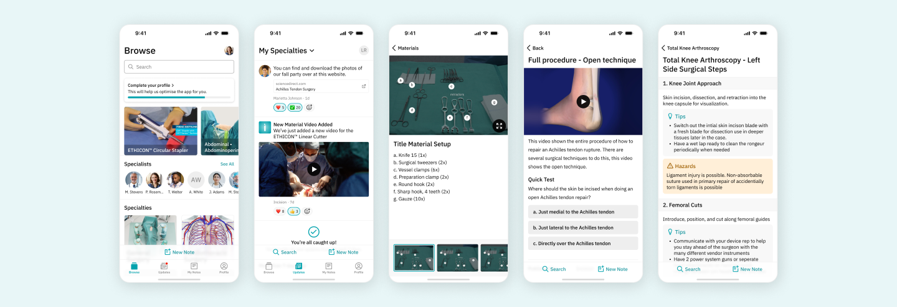

Incision Assist is a mobile “companion” app that aims to help scrub nurses prepare for surgery and improve the team's performance in the operating room (OR).
With Incision Assist, users can see material lists and surgical steps for each procedure, besides learning about protocols and creating personal notes. The most recent version also has an updates page, so users can view posts from their hospitals.
How can we help scrub nurses and anesthetists to prepare for surgery, learn and memorize surgeons-specific preferences for each procedure in their hospital?
Usually, hospitals have a large amount of procedures and protocols that can be only found in some specific hard drives and they can be quickly outdated. Furthermore, not everyone can access this information and it is also common to have different printed protocols, making it difficult to find the most up-to-date version for each procedure/surgeon.
Users can easily feel frustrated at having to remember all this information (surgeons preferences, required materials, patient-specific instructions, etc), especially in difficult or stressful situations, which can happen all too often in a hospital environment. All these factors together can even lead to errors or complications in surgical procedures.
The Incision Assist app provides all important information to prepare users for surgery, whenever is needed. It is possible to search for a procedure and filter it by surgeon to see their preferences. Besides that, users can also search for specialists, materials, surgical steps and even their personal notes.

The interactive 3D room is a crucial feature designed to assist scrub nurses in preparing the patient and setting up the room according to each procedure, including the specific needs of the surgeon. It provides a comprehensive view of all necessary devices, as well as the positioning of the patient and team for each protocol.
Users can also create personal notes from anywhere within the app, linking them to specialties, procedures, materials or specialists. This feature allows them to maintain custom, relevant data in addition to the standard procedures available to all users.

The Updates page keeps users informed about the latest changes within their hospitals. Admins can post various updates, such as changes in material locations or protocol revisions. These posts can include images and videos, and other users can react to each post.
Additionally, the app serves as a valuable learning tool for professionals. The Incision Assist feature offers access to a variety of anatomy models and material information, including draping methods and instructional videos on proper usage.
If you want to know more, below I describe at a high level how we came up with this solution, as well as what my role was in this project.
I was the sole UX designer for the app's MVP, handling all aspects of design. After the launch, I collaborated with the design team to refine the product based on user feedback, enhancing the experience and introducing new features.
In the initial stages, I developed wireframes, UI designs, and interactive prototypes, leveraging data collected during the discovery phase. I also participated in the first user testing session, held at a hospital in the Netherlands.
During the discovery phase, we engaged with potential users to gain a deep understanding of their needs and pain points. Based on these user interviews, we developed various personas and user journeys.
We organized workshops and card sorting sessions to identify potential app functionalities, which were then categorized and prioritized using an effort-impact matrix. I collaborated closely with Product Owners to create new user stories, estimate their complexity, and incorporate them into our design sprints.
Given the niche nature of the product, which had no direct competitors, I conducted benchmarking at the functionality level to ensure it met the specific needs of our target group.
I began the design phase by developing the information architecture and wireframes for the Assist App. I was responsible for presenting the prototype to stakeholders and the development team in Serbia.
Once the prototype was validated, I moved on to the app's UI design. The visual design was based in the company's Design System, which was updated and enhanced as the app evolved and new features were introduced.

After creating the first high fidelity prototype, I had the opportunity to join the team in the first user testing session, at one of our partner hospitals in the Netherlands. It was a great experience and there were really nice insights about the app.
I created a script with specific tasks and prepared the prototype for users to interact with. We utilized Lookback to record the sessions and capture our personal notes. Following the tests, I documented and analysed the results, then I shared the findings with the team.
The user tests showed that with just minor changes we could significantly enhance the overall user experience. This led to the creation of new user stories, and I continued working on this product for an additional two years. As someone once said, a mobile app is never truly "done"— there are always improvements to be made.
